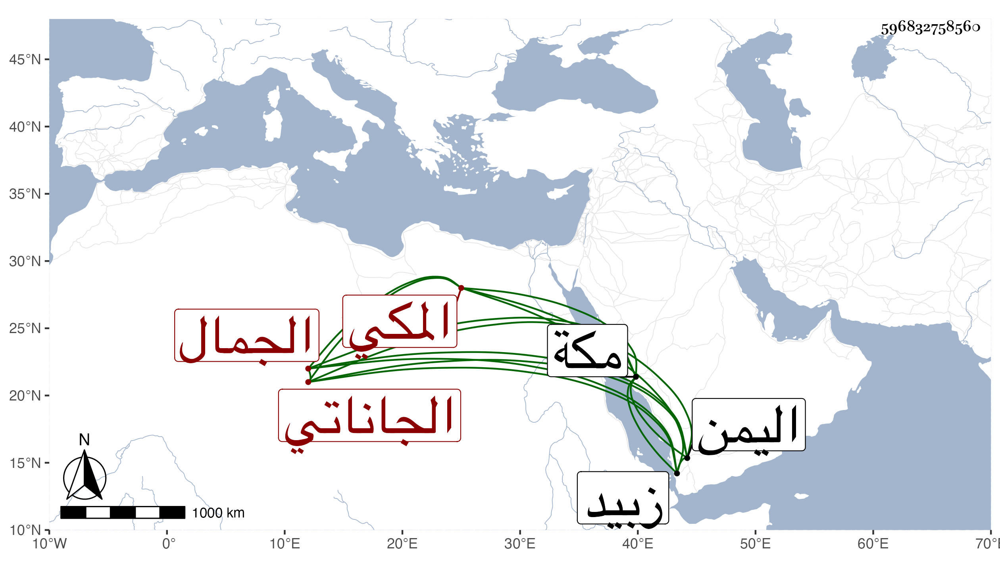

0902Sakhawi.DawLamic.ITO20230111-ara1.EIS1600.596832758560
Biography ID: 596832758560
280
محمد بن يعقوب الجمال الجاناتي المكي سبط العفيف اليافعي أمه زينب وأخو الجمال بن موسى الحافظ لأمه وعبد الرحمن الماضيين . ولد بمكة ونشأ بها واشتغل بالفقه والعربية وتميز فيهما وانتفع في العربية وغيرها بزوج أمه خليل ابن هرون الجزائري وأسمعه أخوه المشار إليه على جماعة وسافر صحبته في سنة اثنتين وعشرين إلى اليمن فأدركه أجله بزبيد منها في شوال سنة ثلاث وعشرين وهو في أثناء عشر الثلاثين وكان كثير الإقبال على العلم ومطالعة كتبه وفيه خير وحياء .
